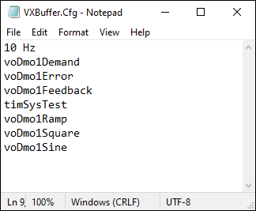

iTest User's Guide
iTest utilizes a high-speed circular buffer that enables the application to store historical data in memory and prevent susceptibility to data loss. The buffer can be configured and selected as the data source in a Chart panel, enabling high rate data to be viewed. This option is active by default via the CIRCLEBUFFER=TRUE powertek.ini setting.
When this feature is enabled, Data_Engine creates the "CircleBuffer" and writes updated values received from vxin_exec to CircleBuffer for all specified channels in VXBuffer.cfg. The extent of a buffer's capability is maximized at 1000 channels at 1000 Hz rate for 60 seconds.
You can add channels to the high-speed circular buffer by modifying the channel contents of the VXBuffer.cfg file used by iTest. This file is located in your $SUPPORTDIR and can be edited using the Plot Buffer editor in Test Manager or SolutionBuilder. Simply add the applicable channel names to the file and save the file prior to exiting. The first line of the file, related to the sample rate in Hz, is reserved for legacy usage.
Example VXBuffer.cfg

The amount of memory, in bytes, allocated for the circle buffer is dependent upon the number of channels to be buffered. The amount is calculated as follows:
((number of channels * 8) + 6) * 60,000
Where:
8 bytes = size of a double precision value
6 bytes = size of time stamp
60,000 = 1,000 samples per second * 60 seconds
To reset the data in the circle buffer, a mailslot message is sent to DataEngine.
Syntax
ResetCircleBuffer <ChannelName>
Parameters
channelname: virtual output channel used to store the result of the mailslot message.
iTest Console plot objects are not capable of using the high-speed circular buffer. Prior to iTest version 3.5, the Test Manager Editor's plot buffer was used to record low-speed data for plotting channels. When a plot was initialized on an iTest Console display, it generated the display with historical data. Because this was not real-time data, it was susceptible to data loss depending upon the CPU load of the GUI PC. The plot buffer VXBuffer.cfg configuration file has been re-purposed in order to provide support for high-speed buffering in AutomationPanel; however, it can also be used to enable the plot buffer for iTest Console displays. By default, this legacy feature is off; to enable it, add the following INI setting to the powertek.ini file and set the value to TRUE.
EnableVXBuffer=TRUE